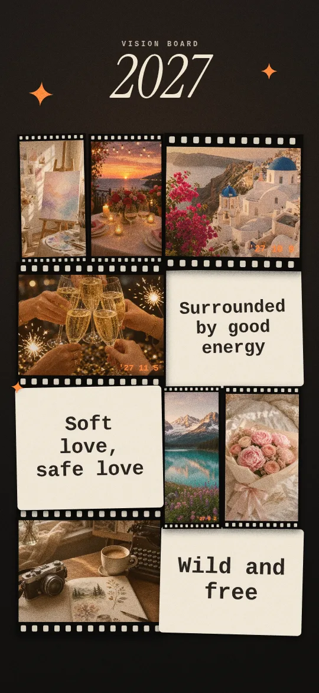
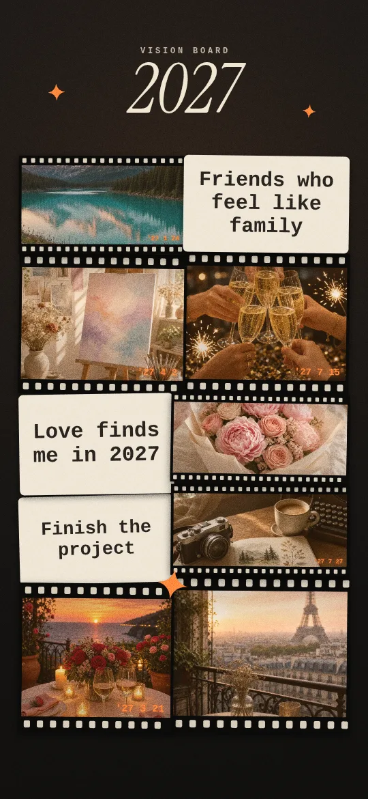
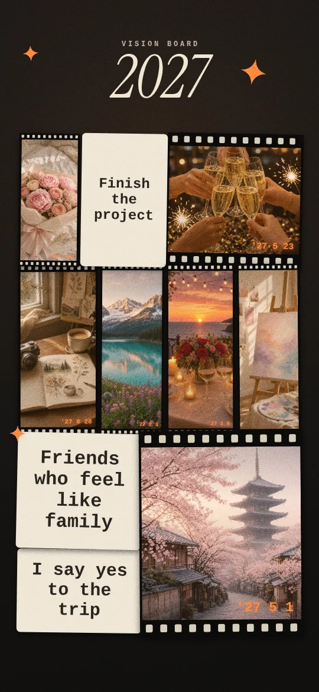

2027 AESTHETIC · 35MM FILM
A 35mm film vision board for your 2027 lock screen
For anyone who carries a point-and-shoot everywhere. 35mm Film puts your goals in negative-strip frames with sprocket holes, a warm faded tone and that orange date stamp in the corner.



The 35mm Film look in one line
Charcoal black with cream typewriter labels, warm film tones and a glowing orange date stamp.
What to put on it
- A road trip or a city you want to see
- Friends at golden hour
- A creative project in progress
- A slow dinner with someone you love
- Mountains, lakes and long walks
In Glowboard you just tap the goals you want (travel, money, love, style and more) and the matching photos and affirmations are added for you. You can also add your own photos. They stay on your phone.
Tips for a board you will actually look at
- Pick photos with warm light. They look best with the film tone.
- Keep the labels short: “Shoot one roll a month”.
- Shuffle until a landscape photo lands in a wide frame.
- “Living for the little moments”
- “Say yes to the trip”
- “Friends who feel like family”
- “I make things every day”
- “Collect memories, not things”
How to set it as your lock screen
iPhone: tap Save image (or long-press and choose “Save to Photos”). Open Photos, tap Share, then Use as Wallpaper. Android: open the image in Gallery or Google Photos, tap ⋮, then Set as wallpaper, then Lock screen.
FAQ
Is 35mm Film free?
35mm Film is a Pro look. You can preview it with your own goals for free.
Are the date stamps real dates?
They are decorative “’27” stamps, so every board feels like a roll from 2027.
More 2027 looks


Glowboard is a free vision board wallpaper maker. There is no sign-up, and your photos never leave your device.